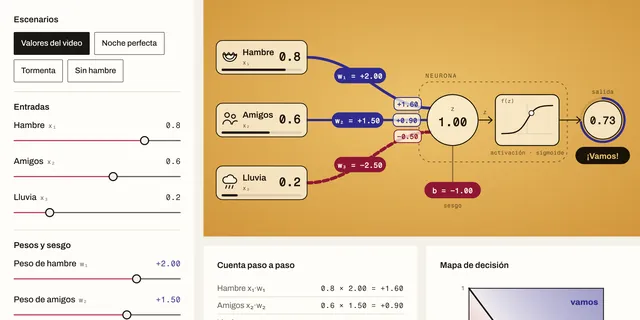
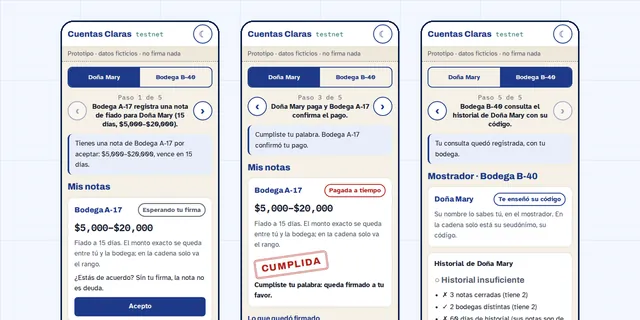
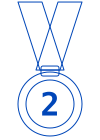
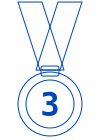
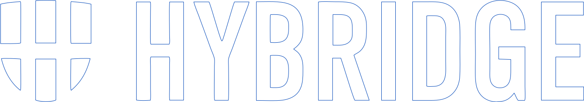
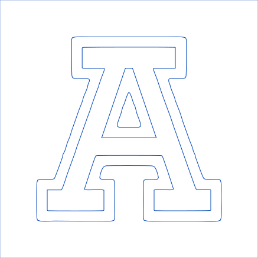
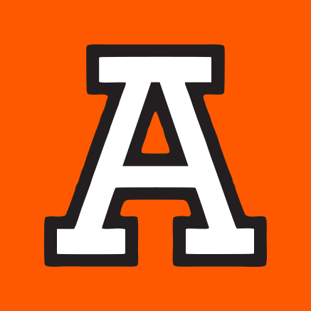
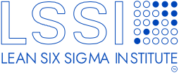
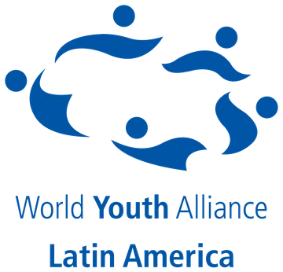
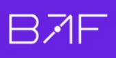

R-01
DESARROLLADOR DE IA Y AUTOMATIZACIÓN
José Hugo
Meza
Automatización inteligente y agentes de IA.
Python, datos y modelos de lenguaje · Estudiante de Ing. en IA e Industrial
En una empresa de distribución pasé de auxiliar administrativo a encargado de bodega en tres meses. Hoy, como desarrollador independiente, automatizo su operación y desarrollo sus primeras soluciones de IA.
P-03v7pipeline de auditoría corriendo en producción
P-018herramientas en un agente de IA con datos oficiales
P-0110k+votos individuales de diputados en la base de ese agente
P-042premios en Goya Hack 2026 · UNAM: 2.º Track Pollar y 3.er Track Contenido
- ESTUDIO
- Ing. en IA (Hybridge) · Ing. Industrial (UVEG)
- HOY
- Automatización para una empresa de distribución
- UBICACIÓN
- Ciudad de México
HOJA 02 / ROLES
Lo que hago, con evidencia
R-02
Automatización de procesos
Automatizo procesos operativos con Python y Apps Script, de la captura de datos a la auditoría diaria.
EVIDENCIA:P-03
R-03
Mejora continua / Lean
Auditoría diaria de la operación del almacén, mejorada versión tras versión hasta la v7; formación en Lean Management (Lean Six Sigma Institute).
EVIDENCIA:P-03
R-04
HOJA 03 / PROYECTOS
Proyectos que lo demuestran
FILTRAR:
P-01 · IA Y AGENTES · DATOSFUNCIONAL
- 01Preguntaen lenguaje natural
- 02Claude decidequé herramienta usar
- 038 herramientasconsultan la base SQLite
- 04Respuestacon citas a fuentes oficiales
AgenteMX
Agente de IA para transparencia legislativa
Responde en lenguaje natural cómo votan los diputados, con datos oficiales y citas a la fuente. Incluye índice de disciplina partidista, detector de contradicciones y radar electoral.
DEMUESTRA:Agentes con herramientas · ETL de datos públicos · interfaz en Streamlit
8herramientas del agente
10k+votos individuales
7partidos cubiertos
- Claude API
- SQLite
- Pandas
- BeautifulSoup
- Streamlit
P-02 · IA Y AGENTES · PRODUCTOEN CONSTRUCCIÓN

Neurona Artificial
Curso abierto para entender la IA por dentro
Videos interactivos con laboratorio para entender cómo funciona la inteligencia artificial, de una sola neurona a los agentes que deciden y actúan. Cada lección trae capítulos, subtítulos y un laboratorio para mover cada pieza.
DEMUESTRA:Fundamentos de IA · explicar lo técnico con claridad · diseño de producto
2lecciones publicadas
7lecciones en camino
- HTML
- CSS
- JavaScript
- Sistema de diseño propio
P-03 · AUTOMATIZACIÓN · DATOSEN PRODUCCIÓN
- 01Captura de datosde la operación del almacén
- 02Auditoría diariaPython · Apps Script
- v1
- v2
- v3
- v4
- v5
- v6
- v7
v7 en producción, todos los días
Pipeline de auditoría
Empresa de distribución · CDMX
Automatiza la auditoría diaria de la operación del almacén con Python y Apps Script. Va en su versión 7 y corre en producción todos los días.
DEMUESTRA:Software en producción · iteración continua hasta la v7
v7versión en producción
- Python
- Apps Script
- Google Sheets
Repositorio privado
P-04 · PRODUCTO2 PREMIOS

Cuentas Claras
Bitácora de fiado cofirmada · Goya Hack 2026


2.º LUGAR · TRACK POLLAR
3.er LUGAR · TRACK CONTENIDO
Goya Hack 2026 · CriptoUNAM × Facultad de Ingeniería, UNAM
La bodega registra cada venta a crédito y el cliente la confirma desde su teléfono: nadie anota una deuda solo ni borra el historial. Las reglas las hace cumplir un contrato en Stellar.
DEMUESTRA:Contratos inteligentes · diseño de producto · pitch de 3 minutos
3reglas en el contrato
2firmas por nota
- Stellar
- Soroban · Rust
- JavaScript
- Node.js
HOJA 04 / EXPERIENCIA
Experiencia
-
ACTUAL CDMX
Desarrollador independiente de IA y automatización
Independiente para una empresa de distribución · sep 2026 – actual
- Automatizo la operación diaria de la empresa y desarrollo sus primeras soluciones de IA.
- Mantengo el pipeline de auditoría diaria en Python y Apps Script (v7, en producción).
- Desarrollo herramientas internas para pedidos y control de bodega.
-
AGO – SEP 2026 CDMX
Encargado de bodega
Misma empresa
- Pasé de auxiliar administrativo a encargado de la bodega en tres meses.
- Operé el día a día de la bodega.
-
MAY – JUL 2026 CDMX
Auxiliar administrativo
Misma empresa
- Llevé los registros y reportes administrativos de la operación diaria.
- Coordiné con proveedores y áreas internas.
-
OCT 2026 CDMX · COYOACÁN
1.er lugar en equipo · Laboratorio de Futuros
Chilangatón 2026 · SECTEI y SEDECO, Ciudad de México
- Primer lugar con el equipo La Chilangonería del futuro, por una propuesta de movilidad para la CDMX y su zona metropolitana al 2040, con lente de cuidados y periferias.
- Aprendí de mis compañeras, especialistas en estudios de futuros, su metodología de investigación. En un día pasamos de 34 fuerzas de cambio con fuente a una matriz impacto × incertidumbre, 3 escenarios al 2040 y 11 metas medibles.
- Mi rol: análisis de datos e investigación, con apoyo de IA (Claude) y revisión humana de cada cifra.
LO QUE MÁS ME LLEVO:- Trabajo en equipo
- Confianza
- Comunicación
- Estudios de futuros
-
SEP 2026 UNAM · FI
2.º lugar Track Pollar · 3.er lugar Track Contenido
Goya Hack 2026 · CriptoUNAM × Facultad de Ingeniería, UNAM
- Dos premios con Cuentas Claras, uno de los 12 proyectos finalistas: bitácora de fiado cofirmada con un contrato inteligente en Stellar, presentada en un pitch de 3 minutos.
- Segundo lugar del Track Pollar, patrocinado por Pollar (infraestructura de wallets y pagos sobre Stellar).
- Tercer lugar del Track Contenido.
// Cómo trabajo: diagnóstico → diseño → construcción con IA y pruebas en 3 capas → control con DMAIC.
HOJA 05 / FORMACIÓN
Formación, herramientas y liderazgo
Estudio dos ingenierías al mismo tiempo: Inteligencia Artificial en Hybridge Education e Industrial en la UVEG. En paralelo automatizo la operación de una empresa de distribución, donde convierto lo que aprendo en sistemas que se usan todos los días.
HABILIDADES BLANDAS
Comunicación: dos concursos nacionales de oratoria (2026). Liderazgo: Aspire Leaders Program y Emerging Leaders Conference 2026. Ritmo de operación real: decisiones diarias en un negocio con clientes y proveedores.
HERRAMIENTAS
PROGRAMACIÓN
- Python
- JavaScript
- TypeScript
- SQL
- Bash
IA Y DATOS
- Claude API
- Claude Code
- OpenAI
- Pandas
- NumPy
- Streamlit
AUTOMATIZACIÓN
- Apps Script
- Google Workspace
- Excel avanzado
- GitHub Actions
CLOUD Y HARDWARE
- AWS
- Docker
- Linux
- Arduino
PROCESOS
- Lean Six Sigma
- DMAIC
IDIOMAS
- Español · nativo
- Inglés · A2, en formación (beca Bécalos)
FORMACIÓN Y PROGRAMAS
Hybridge Education
Ingeniería en Inteligencia Artificial
3.er cuatrimestre de 8

UVEG
Ingeniería Industrial
38% completado
Universidad Anáhuac México Norte
Seminario de IA y Ciencia de Datos
Beca 100% · Santander 2026


Aspire Leaders Program
Programa de liderazgo global fundado por académicos de Harvard
Seleccionado
Oracle Next Education
ONE AI For Business
- Inmersión: Agentes de IA para Negocios Finalizada · 13 oct 2026Verificar autenticidad ↗
- Fase Tech Builder En curso · desde oct 2026
Lean Six Sigma Institute
Lean Management
En curso · avalado por The Council for Six Sigma Certification

LIDERAZGO, ORATORIA Y COMUNIDAD
Universidad Anáhuac México · World Youth Alliance
Emerging Leaders Conference 2026: “Educación en dignidad humana e identidad personal”
Reconocimiento por participación · 23 y 24 de septiembre de 2026
Ver reconocimiento (PDF) ↗

Senado de la República
II Certamen de Oratoria “Ricardo Flores Magón 2026” · nacional, con estudiantes de varios estados
Reconocimiento por destacada participación · 24 de febrero de 2026
Ver reconocimiento (PDF) ↗
Congreso del Estado de Oaxaca
XXIV Certamen Nacional de Oratoria “Licenciado Benito Juárez García 2026”
Reconocimiento por destacada participación · 27 de marzo de 2026
Ver reconocimiento (PDF) ↗
Universidad Anáhuac México · Human & Nonhuman Communication Lab
Primer Hackathon de Vibe Coding de la Anáhuac: “El Lenguaje es el nuevo código: Prompting Good Hackathon de AI for Good”
Reconocimiento como asistente · 17 de abril de 2026
Ver reconocimiento (PDF) ↗
Programa de Embajadores de Stellar
Embajador en Latinoamérica · coordinado por BAF
Desde octubre de 2026

HOJA 06 / CONTACTO
¿Hablamos de automatización inteligente?
Escríbeme por correo o por LinkedIn.
CORREOjose2501106@hybridge.education↗
LINKEDINin/josehugomeza-ai↗
GITHUBjose2501106-IA↗
CVDescargar CV (PDF)↓
UBICACIÓNCiudad de México, México·